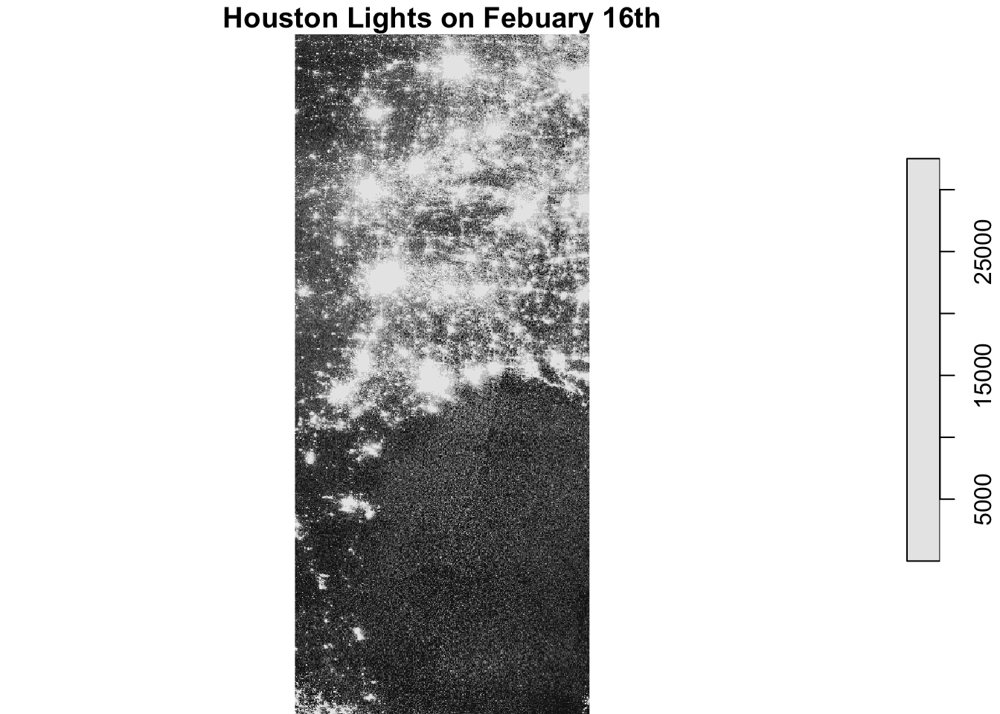
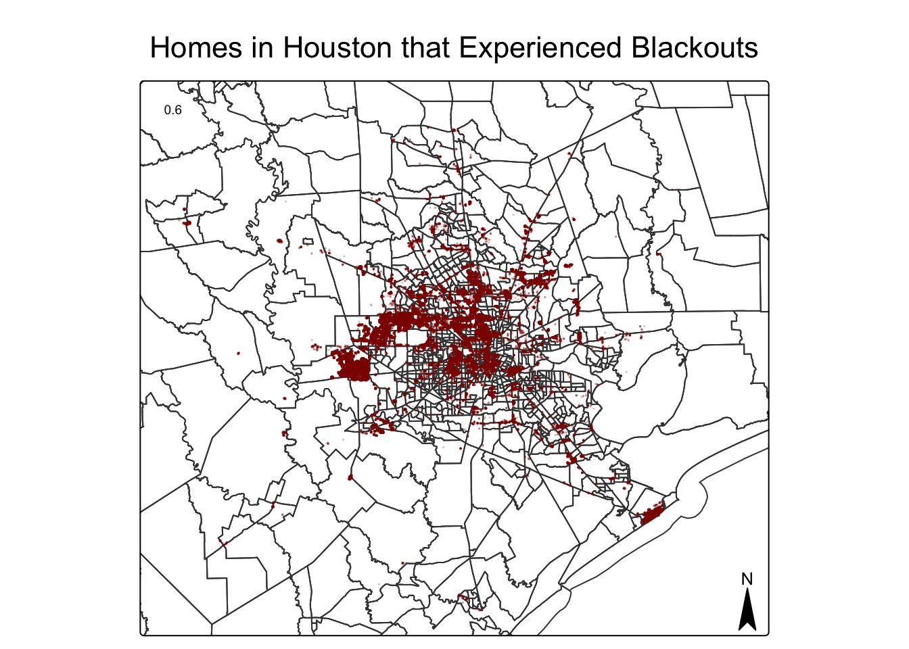
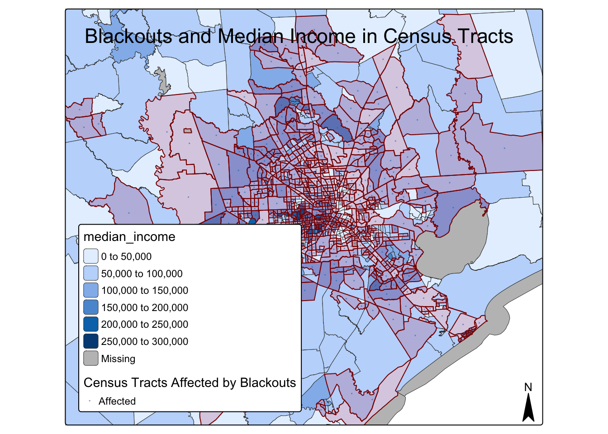
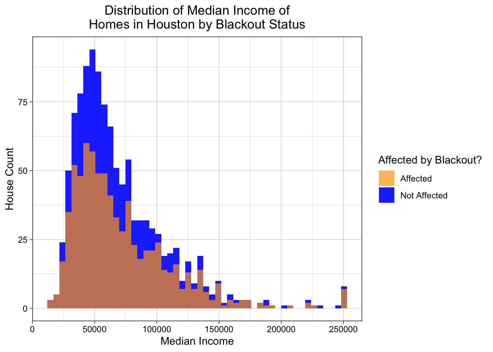

Import libraries
library(sf)
library(here)
library(tmap)
library(tidyverse)
library(testthat)
library(kableExtra)
library(stars) 
Source: New York Times
Climate change is driving more frequent and intense extreme weather events with severe consequences. In February 2021, Texas experienced a major power crisis caused by three severe winter storms. In this project, I estimate the number of homes in the Houston metropolitan area that lost power during these storms and analyze whether the impacts were disproportionately distributed. This integrated approach leverages remote sensing and spatial analysis to understand the event’s implications:
Satellite data for 2021-02-07 and 2021-02-16 from NASA LAADS DAAC. Houston lies on the border of tiles h08v05 and h08v06, so we download two tiles per date.
Files:
VNP46A1.A2021038.h08v05.001.2021039064328.tif —> 2021-02-07, tile h08v05VNP46A1.A2021038.h08v06.001.2021039064329.tif —> 2021-02-07, tile h08v06VNP46A1.A2021047.h08v05.001.2021048091106.tif —> 2021-02-16, tile h08v05VNP46A1.A2021047.h08v06.001.2021048091105.tif —> 2021-02-16, tile h08v06Road data may influence night light patterns. Obtained from OpenStreetMap via Geofabrik.
File: gis_osm_roads_free_1.gpkg
Housing data also from OSM via Geofabrik.
File: gis_osm_buildings_a_free_1.gpkg
Socioeconomic data comes from the U.S. Census Bureau ACS. We use the Texas-specific geodatabase for census tract-level median income.
Files:
ACS_2019_5YR_TRACT_48_TEXAS.gdbACS_2019_5YR_TRACT_48_TEXASFirst, we load the libraries and data.
library(sf)
library(here)
library(tmap)
library(tidyverse)
library(testthat)
library(kableExtra)
library(stars) feb07v05 <- stars::read_stars(here::here("data", "VNP46A1",
"VNP46A1.A2021038.h08v05.001.2021039064328.tif"))
feb07v06 <- stars::read_stars(here::here("data", "VNP46A1",
"VNP46A1.A2021038.h08v06.001.2021039064329.tif"))
feb16v05 <- stars::read_stars(here::here("data", "VNP46A1",
"VNP46A1.A2021047.h08v05.001.2021048091106.tif"))
feb16v06 <- stars::read_stars(here::here("data", "VNP46A1",
"VNP46A1.A2021047.h08v06.001.2021048091105.tif"))hway_query <- "SELECT * FROM gis_osm_roads_free_1 WHERE fclass='motorway'"
hway <- st_read(here::here("data", "gis_osm_roads_free_1.gpkg"),
quiet = TRUE, query=hway_query)homes_query <- "SELECT *
FROM gis_osm_buildings_a_free_1
WHERE (type IS NULL AND name IS NULL)
OR type in ('residential', 'apartments', 'house', 'static_caravan', 'detached')"
homes <- st_read(here::here("data", "gis_osm_buildings_a_free_1.gpkg"),
quiet = TRUE, query=homes_query) # From the metadata, Median income is B19013e1.
income <- read_sf(here::here("data", "ACS_2019_5YR_TRACT_48_TEXAS.gdb"), layer="X19_INCOME") %>%
dplyr::select(B19013e1, GEOID) %>%
rename(median_income = B19013e1, GEOID_Data = GEOID)
acs_geom <- read_sf(here::here("data", "ACS_2019_5YR_TRACT_48_TEXAS.gdb"), layer="ACS_2019_5YR_TRACT_48_TEXAS")First, check if the two different days datasets have the same coordinate systems.
# Check if CRS of each dataset are equal
st_crs(feb07v05) == st_crs(feb07v06)[1] TRUEst_crs(feb16v05) == st_crs(feb16v06)[1] TRUENext, create a raster for each day.
# Create raster for each day
feb07 <- st_mosaic(feb07v05, feb07v06)
feb16 <- st_mosaic(feb16v05, feb16v06)Now, we can check if the combined datasets have the same coordinate systems.
if(st_crs(feb07) == st_crs(feb16)) {
print("Coordinate reference systems match")
} else{
warning("Updating coordinate reference systems to match")
# transform data to match
feb07 <- st_transform(feb07, st_crs(feb16))
}[1] "Coordinate reference systems match"A set of maps comparing night light intensities before and after the first to storms
# Plot the two maps
plot(feb07, main="Houston Lights on Febuary 7th")
plot(feb16, main="Houston Lights on Febuary 16th")
Find the change in night lights intensity (presumably) caused by the storm
# Find change in night light intensities
feb_diff <- (feb07 - feb16)Reclassify the difference raster, assuming that any location that experienced a drop of more than 200 nW cm-2sr-1 experienced a blackout and assign NA to all locations that experienced a drop of less than 200 nW cm-2sr-1 change
# Reclassify the difference raster
feb_diff[feb_diff <200] <- NAVectorize the blackout mask
# Vectorize blackout mask
# hint: use st_as_sf() to convert from a raster to a vector
# and fix any invalid geometries with st_make_valid()
blackout_sf <- feb_diff %>%
st_as_sf() %>%
st_make_valid()Crop (spatially subset) the blackout mask to the Houston area as defined by the following coordinates: (-96.5, 29), (-96.5, 30.5), (-94.5, 30.5), (-94.5, 29)
# create Houston boundary
houston_bbox <- st_bbox(c(xmin=-96.5,
ymin=29,
xmax=-94.5,
ymax=30.5)) %>%
st_as_sfc() %>%
st_as_sf() %>%
st_set_crs(st_crs(blackout_sf))Re-project the cropped blackout dataset to EPSG:3083 (NAD83 / Texas Centric Albers Equal Area)
blackout_sf <- st_transform(blackout_sf, crs = 3083)
if(st_crs(blackout_sf) == st_crs(houston_bbox)) {
print("Coordinate reference systems match")
} else{
warning("Updating coordinate reference systems to match")
# transform data to match
houston_bbox <- st_transform(houston_bbox, st_crs(blackout_sf))
}Limit dataframe of blackout areas to the Houston Region
# Crop dataframe to Houston Region
houston_mask <- st_intersects(blackout_sf, houston_bbox, sparse = FALSE)
houston_blackout <- blackout_sf[houston_mask, ]First we ensure CRS of dataframes are the same.
if(st_crs(hway) == st_crs(houston_bbox)) {
print("Coordinate reference systems match")
} else{
warning("Updating coordinate reference systems to match")
# transform data to match
hway <- st_transform(hway, st_crs(houston_bbox))
}Identify areas within 200m of all highways.
# Create a buffer of 200m highway radius
hway_buffer <- st_buffer(hway, dist = 200) %>%
st_union() Find areas that experienced blackouts that are further than 200m from a highway.
# Find blackouts outside the buffer
outside_hwy <- st_difference(houston_blackout, hway_buffer)Identify homes that overlap with areas that experienced blackouts
if(st_crs(homes) == st_crs(houston_blackout)) {
print("Coordinate reference systems match")
} else{
warning("Updating coordinate reference systems to match")
# transform data to match
homes <- st_transform(homes, st_crs(houston_blackout))
}# Find homes that intersect within the blackouts
homes_blackout <- homes[outside_hwy, , op=st_intersects]Homes in Houston that Experienced Blackouts:
The more opaque a red dot is, the more higher the density of homes with a blackout in that area.
tm_shape(acs_geom, bbox = houston_bbox) +
tm_borders() +
tm_shape(homes_blackout) +
tm_dots(col = "darkred",
size = 0.05,
alpha = 0.2,
showNA = FALSE,
title = "Homes in Houston that\nExperienced Blackouts") +
tm_compass(position = c("RIGHT", "BOTTOM")) +
#tm_scale_bar(position = c("RIGHT", "BOTTOM"), width=.2) + # Position the scale bar
tm_layout(main.title = "Homes in Houston that Experienced Blackouts",
main.title.size = 1.4,
main.title.position = c("center", "top"),
title.size = 0.6,
legend.position = c("LEFT", "BOTTOM"),
outer.margins = c(0.02, 0.02, 0.02, 0.02), # Tighten the outer margins to avoid excess space
inner.margins = c(0, 0, 0, 0))
Estimate of number of homes in the blackout
# Estimate number of blackouts
blackout_home_number <- nrow(homes_blackout)
print(paste0(blackout_home_number, ' homes lost power'))[1] "157970 homes lost power"Join the median household income from the previous 12 months to the census tract geometries
# Join income data with census tract data
income_geom <- left_join(acs_geom, income, by = "GEOID_Data")if(st_crs(income_geom) == st_crs(homes_blackout)) {
print("Coordinate reference systems match")
} else{
warning("Updating coordinate reference systems to match")
# transform data to match
income_geom <- st_transform(income_geom, st_crs(homes_blackout))
}Identify census tracts that that contained homes that experienced blackouts
# Filter and crop census tracts with and without blackouts
census_blackout <- st_filter(income_geom, homes_blackout)
census_blackout <- st_crop(census_blackout, houston_bbox)
census_nonblackout <- st_filter(income_geom, homes_blackout, .predicate = st_disjoint)
census_nonblackout <- st_crop(census_nonblackout, houston_bbox)
# Dataframe with Houston census
census_tracts_full <- st_crop(income_geom, houston_bbox)census_blackout$is_affected <- "Affected"
census_nonblackout$is_affected <- "Not Affected"tm_shape(census_tracts_full) +
tm_polygons(
fill = "median_income",
fill.scale = tm_scale_continuous(
values = "viridis",
value.na = NA
),
fill.legend = tm_legend(
title = "Median Income",
na.show = FALSE
),
border.col = NA,
lwd = 0.5
) +
tm_shape(census_blackout) +
tm_fill(
fill = "maroon",
fill_alpha = 0.2,
fill.legend = tm_legend(na.show = FALSE)
) +
tm_borders(col = "darkred") +
tm_shape(census_blackout) +
tm_dots(
fill = "is_affected",
fill_alpha = 0.5,
size = 0.05,
fill.legend = tm_legend(
title = "Census Tracts Affected by Blackouts",
na.show = FALSE
)
) +
tm_compass(position = c("RIGHT", "BOTTOM")) +
tm_title(
"Blackouts and Median Income in Census Tracts",
size = 1.4,
position = c("left", "top")
) +
tm_layout(
legend.position = c("left", "bottom"),
outer.margins = c(0.02, 0.02, 0.02, 0.02),
inner.margins = c(0, 0, 0, 0)
)
ggplot(census_blackout, aes(fill=is_affected)) +
geom_histogram(data= census_nonblackout,
aes(x = median_income,
fill=is_affected),
alpha = .9,
bins = 50) +
geom_histogram(aes(x = median_income,
fill = is_affected),
alpha = .7,
bins = 50) +
theme_linedraw() +
scale_fill_manual(name="Affected by Blackout?",values=c("orange","blue"))+
ggtitle("Distribution of Median Income of\nHomes in Houston by Blackout Status") +
xlab("Median Income") +
ylab("House Count") +
theme(plot.title = element_text(hjust = 0.5))
We found that 157,970 homes had been affected by Texas’s 2021 energy crisis, which in total seems to be a bit less than those not affected by the blackout. There does not seem to be a significant difference in the distribution of median incomes between those affected. However, limitations due to the day the data was taken, cloud coverage and even our data filtering may exclude variables important for the insights necessary to create a more thorough analysis. The analysis could include if blackout distributions by median income were truly non significant in difference. With more data, it is possible socioeconomic discrepancies may arise.
tribble(
~Data, ~Citation, ~Link,
"Night light data from Level-1 and Atmospheric Archive & Distribution System Distributed Active Archive Center (LAADS DAAC)", "Menzel, W.P., Frey, R.A., and Baum, B.A. (2015). Terra/MODIS Cloud Product 5-Min L2 Swath 1 km and 5 km, C6, NASA Level-1 and Atmosphere Archive & Distribution System (LAADS) Distributed Active Archive Center (DAAC), Goddard Space Flight Center, Greenbelt, MD. [http://dx.doi.org/10.5067/MODIS/MOD06_L2.006]", "[LAADS DAAC](https://ladsweb.modaps.eosdis.nasa.gov/)",
"Open Street Map (OSM) Buildings and Roads data", "OpenStreetMap contributors. (2015) Planet dump North America. Retrieved from https://planet.openstreetmap.or", "[OSM](https://planet.openstreetmap.org/)",
"Socioeconomic data from the American Community Survey", "U.S. Census Bureau. (2019). 2019 American Community Survey Public Use Microdata Samples. Retrieved from https://factfinder.census.gov/faces/nav/jsf/pages/searchresults.xhtml?refresh=t", "[ACS](https://www.census.gov/programs-surveys/acs/data.html)"
) %>%
kable()| Data | Citation | Link |
|---|---|---|
| Night light data from Level-1 and Atmospheric Archive & Distribution System Distributed Active Archive Center (LAADS DAAC) | Menzel, W.P., Frey, R.A., and Baum, B.A. (2015). Terra/MODIS Cloud Product 5-Min L2 Swath 1 km and 5 km, C6, NASA Level-1 and Atmosphere Archive & Distribution System (LAADS) Distributed Active Archive Center (DAAC), Goddard Space Flight Center, Greenbelt, MD. [http://dx.doi.org/10.5067/MODIS/MOD06_L2.006] | LAADS DAAC |
| Open Street Map (OSM) Buildings and Roads data | OpenStreetMap contributors. (2015) Planet dump North America. Retrieved from https://planet.openstreetmap.or | OSM |
| Socioeconomic data from the American Community Survey | U.S. Census Bureau. (2019). 2019 American Community Survey Public Use Microdata Samples. Retrieved from https://factfinder.census.gov/faces/nav/jsf/pages/searchresults.xhtml?refresh=t | ACS |